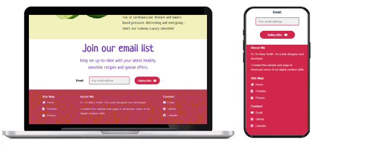
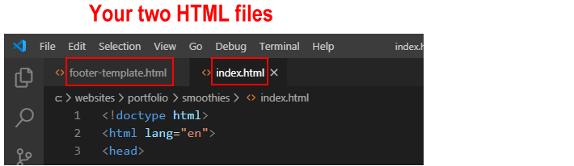
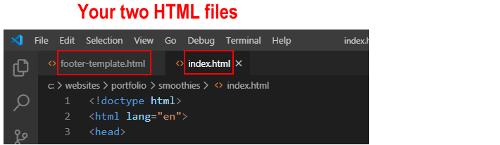

Introduction
In this task you will use template content to add a footer section with styles to the single-web page 'Smoothies' project you created earlier.
You can display a finished version of the project web page on GitHub by clicking the image below.

Learning Goals
At the end of this Tutorial you will be able to:
- Copy selected HTML with text content from a template file to a sample web page.
- Copy selected CSS from a template file to a stylesheet for a sample web page.
- Edit the copied HTML and CSS as required.
Working with your two HTML files
You will begin by working with two HTML files:
- The template file you will copy from and
- The web page you will copy to.
Start Visual Studio Code.
- From your websites\templates folder, open one of the following two HTML files. You can choose whichever footer version you like best.
-or-
- From your websites\portfolio\smoothies folder, open your web page named index.html.
 If you have any other files open in Visual Studio, you may wish to close them.

This will help you to focus only on the two HTML files you will be working with.
If you have any other files open in Visual Studio, you may wish to close them.

This will help you to focus only on the two HTML files you will be working with.
Add the <head> link for the Font Awesome icons
Your footer will use Font Awesome 5 icons. So you need to copy and paste the link to the Font Awesome stylesheet CSS file from the <head> section of the footer template file to the <head> section your index.html web page.
- In the footer template file, select the Font Awesome link from the <head> section and copy it.

- In your index.html web page, paste the copied Font Awesome link in the <head> section, just after the link to Google Fonts as shown below.

When finished, save your index.html web page.
Working with your two CSS files
Your next task is to work with two CSS files:
- The template CSS file you will copy from and
- The stylesheet you will copy to.
In Visual Studio Code:
- From your websites\templates folder, open one of the following two CSS files. Choose whichever one is for the footer template file you choose earlier.
-or-
- From your websites\portfolio\smoothies\assets\css folder, open your stylesheet named style.css.
 If you have any other files open in Visual Studio, you may wish to close them.
If you have any other files open in Visual Studio, you may wish to close them.
 This will help you to focus only on the two CSS files you will be working with.
This will help you to focus only on the two CSS files you will be working with.
Validate your HTML file
To check your HTML is correct, use the official W3C Markup Validation Service. Follow these steps.
- Go to this web page: https://validator.w3.org.
- Click the Validate by Direct Input tab.

- Copy and paste your HTML file into the box named Enter the Markup to validate.
- Click the Check button.
- If you see any errors, return to your index.html file, fix the errors, save the file, and copy the entire file again.
In the HTML Validator, click the Back button of your web browser to again display the Validate by Direct Input tab. Click once in the tab and paste in your corrected HTML file. Your new, pasted-in file will replace the earlier version. Finally, click the Check button.
Validate your CSS file
To check your CSS is correct, use the official W3C CSS Validation Service. Follow these steps.
- Go to this web page: https://jigsaw.w3.org/css-validator.
- Click the By direct input tab.

- Copy and paste your CSS file into the box named Enter the CSS you would like validated.
- Click the Check button.
- If you see any errors (other than those related to the fluid typographic equation, as shown below), return to your style.css file in Visual Studio, fix the errors, save the file, and copy the entire file again.

- In the CSS Validator, click the Back button of your web browser to again display the By direct input tab. Click once in the tab and paste in your corrected CSS file. Your new, pasted-in file will replace the earlier version. Finally, click the Check button.
Upload your project to GitHub
The final step is to upload your project to GitHub.
All the files for this project are in a sub-folder named smoothies of your websites/portfolio folder.
So you will need to upload this smoothies sub-folder, which contains both files and other sub-folders, to your account on GitHub.
- Open a new tab in your web browser and go to GitHub.com. If you are not already signed in to your GitHub account, sign in now.

- On your GitHub home page, click the name of the repository ('repo') that holds your web pages. Its name will look as follows, where username is your chosen username on GitHub.
username.github.io

- The next GitHub screen displayed should look as follows. Click on the portfolio folder.

- On the next screen displayed, click the Upload files button.

- In File/Windows Explorer on your computer, display your portfolio folder and then drag-and-drop the smoothies folder to the GitHub tab in your web browser.

- After uploading the smoothies folder, scroll down to the bottom of the GitHub screen, enter a short message in the Commit changes box, click the Commit changes button, and wait for the upload to complete.

Your 'Smoothies' project web page with the footer is now published on GitHub at a web address similar to the following, where username is the username you have chosen for your GitHub account:
https://username.github.io/portfolio/smoothies/index.html
or, simply:
https://username.github.io/portfolio/smoothies
It may take a few minutes for your uploaded files to appear on GitHub.
Return to Contents.